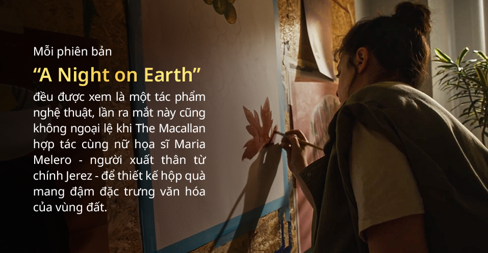

Niềm tự hào của Jerez tiếp tục tỏa sáng với kỹ năng thẩm
định và phối trộn điêu luyện của các nghệ nhân The Macallan,
kiến tạo nên chất vị whisky độc bản với chất lượng trường
tồn hàng thế kỷ. Sự kết hợp tài tình mang lại hương vị ngọt
ngào của bánh nướng, mật ong, vani, nho khô, gia vị và gỗ
sồi, cùng một dư âm đậm đà quấn quýt khi thưởng thức. Có thể
nói tất cả sự ấm áp và lòng hiếu khách của buổi tiệc mừng
năm mới theo truyền thống Tây Ban Nha đã được gói trọn trong
từng giọt “A Night on Earth in Jerez de la Frontera”.

Thu hút sự chú ý từ cái nhìn đầu tiên là sắc đỏ thẫm của
cảnh hoàng hôn với một vệt sao băng màu vàng tượng trưng cho
điều may mắn. Dưới bầu trời đêm ẩn hiện những vườn nho trải
dài tượng trưng cho niềm tự hào của người Jerez, đồng thời
cũng là nơi khởi nguồn của rượu Sherry, cạnh bên là những
bụi hoa hồng nở rộ đang âm thầm bảo vệ vườn nho bằng cách
cảnh báo những dấu hiệu thay đổi của đất đai.
Mở hộp là bức tranh ghép với những mảng màu tươi sáng của
gạch Azulejo, loại gạch truyền thống được làm từ đất sét bản
địa do các nghệ nhân vẽ trực tiếp bằng tay trước khi nung
trong 8 giờ để có được màu men bóng bẩy. Họa tiết trang trí
trên mỗi viên gạch là những biểu tượng mang dấu ấn của di
sản The Macallan như thùng gỗ, hạt sồi, nồi chưng cất…